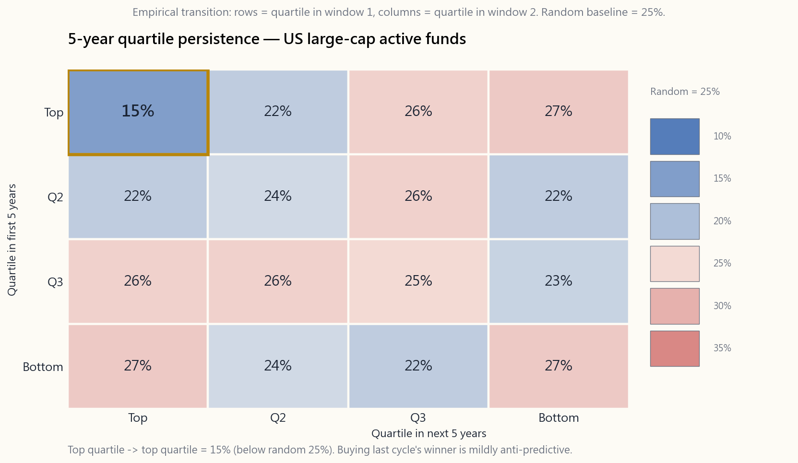
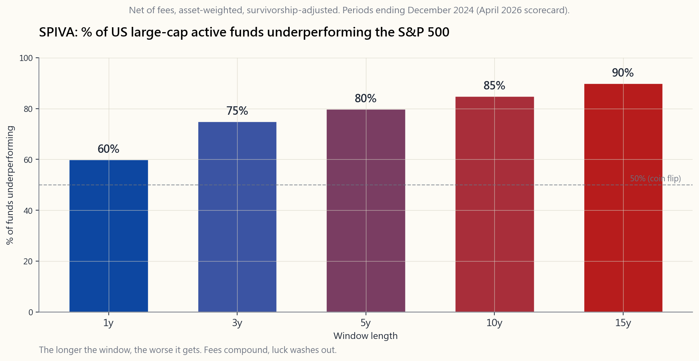

Week 43: Active Management — SPIVA, Persistence, and What Very Few Managers Actually Do
1. Why This Is Important
Almost every investor, at some point, hears the same pitch: *this fund beat the market last year, this manager has a special process, this strategy has worked for a decade, you should pay 1% a year (or 2-and-20) for it.* The pitch is sometimes true. It is, on the data, almost always false. This lesson is the cold-shower week. Before we look at the rare strategies that do generate alpha, we have to look squarely at the base rate — at how rare manager skill actually is, how poorly past performance predicts future performance, and how the survivorship bias built into every fund advertisement systematically lies to you.
You need this material for four reasons.
and alpha is the rare gap* — that is not a slogan, it is a numerical claim. The SPIVA scorecards make it concrete. Over 15 years, roughly 90% of US large-cap equity managers underperform the S&P 500. Default to passive is not a preference, it is what the evidence forces you to do unless you can name a specific reason this manager is in the surviving 10%.
the market in one five-year window very rarely repeat. SPIVA's persistence reports show only ~15% of top-quartile funds remain top quartile in the following five years. Random would predict 25%. Past performance is not just not predictive — for the top performers it is mildly anti-predictive, because mean reversion and benchmark drift work against last cycle's heroes.
tells you the average large-cap fund returned 9% over the last twenty years, that average only counts funds that still exist. The 30-40% of funds that closed or merged because of poor performance are dropped from the calculation. Once you re-add them, the gap to the index widens further. If you don't know to ask "survivorship-adjusted?" you will systematically overestimate manager skill.
say no one beats the market. It says the average active mutual fund does not. Inside that average sits a tail of strategies — deep value activism, quantitative systematic, event-driven, high-touch CTAs — that are documentably persistent over decades. They are not accessible through a Vanguard ticker, they require capital, lockups, or specific expertise, and three of the four are not what most retail investors think of when they hire an "active" manager. The alpha sources Horace himself uses are exactly these structural pockets; this lesson maps where the institutional taxonomy puts them.
This week is the bridge between should I be active or passive? (almost always passive) and the lessons that follow on *if I am going to be active in part of my book, what do I actually have to do?*
2. What You Need to Know
2.1 The SPIVA Scorecard — How Bad Is It Really?
S&P Dow Jones publishes the SPIVA (S&P Indices Versus Active) scorecard twice a year. It is the closest thing the industry has to an audited, survivorship-adjusted ledger of active manager performance. The methodology is simple: for each Morningstar fund category, compare the asset-weighted (and equal-weighted) net-of-fee return of every fund that existed at the start of the period to the appropriate S&P benchmark, and report the percentage that underperformed.
The April 2026 scorecard, looking at periods ending December 2024, gives the following picture for US large-cap equity funds:
- 1-year window: ~60% of funds underperform the S&P 500.
- 3-year window: ~75%.
- 5-year window: ~80%.
- 10-year window: ~85%.
- 15-year window: ~90%.

The pattern is not subtle. As the window lengthens, the percentage of underperforming managers monotonically rises. Why? Because over a single year, luck dominates. Over fifteen years, fees compound, the high-fee tail gets dragged below the index by sheer expense, and survivorship-adjusted accounting starts to bite. Pulling 100 bps a year out of an 8% gross return is pulling more than an eighth of the total return — and that is what you are paying the average mutual fund to do to you, not for you.
Other categories tell similar stories. Small-cap is slightly better for active (more inefficient market, ~80% underperform at 15y). International developed is similar. Emerging markets is slightly worse for the index, but adjusted for currency hedging the gap narrows. The one place where active consistently wins is, surprise, the most expensive corner of the market: liquid hedge funds and illiquid private credit, both of which have selection bias and mark-to-model issues that flatter their numbers. We will look at those carefully in later weeks.
2.2 The Persistence Problem
A reasonable response to SPIVA is: "Fine, the average manager is bad. But there must be some persistent winners. I will just pick those." This is what every fund-of-funds, every wirehouse advisor, and most pension consultants do for a living. The data says it does not work either.
S&P also publishes a Persistence Scorecard. Take all US large-cap funds, rank them on five-year performance, and put the top quartile to one side. Now wait five years and look at where those funds rank in the next five-year window. Random chance says 25% of them should remain in the top quartile. The empirical number, averaged across many vintages, is closer to 15%.
That is not just below random — it is meaningfully below random. The last cycle's stars systematically underperform pure chance going forward. The reasons are mechanical, not mysterious:
- Style drift / mean reversion. A fund that crushed it because it
- Asset bloat. Success attracts inflows. A fund that ran $200M of
- Manager turnover. The PM who built the track record retires, or
- Fees. Top-quartile funds are routinely the ones that hike fees
The transition picture is laid out below. The diagonal — top-stays-top, bottom-stays-bottom — is barely above the off-diagonal. Last cycle's quartile rank carries almost no information about next cycle's rank.

below random. The bottom-stays-bottom cell is also depressed because bad funds get killed and drop out (survivorship bias). Off-diagonal cells fan out in the 20-30% range. The picture is the visual proof that last cycle's quartile rank carries almost no information about next cycle's rank — and at the top, is mildly anti-predictive.">2.3 Survivorship Bias — Why the Average Looks Better Than It Is
Every fund advertisement you see suffers from the same accounting trick, often unintentionally. When a fund family looks at "the average return of our equity funds over the last 10 years," they only include funds that still exist. The funds that performed badly enough to be closed, merged into a different fund, or quietly liquidated are dropped from the dataset.
Over a 15-year horizon, roughly 30-40% of US equity mutual funds that existed at the start are no longer there at the end. They didn't disappear because they were too good. They disappeared because they were too bad. Removing them from the average is the equivalent of ranking a graduating class only after dropping out the bottom third.
When SPIVA recomputes the same numbers survivorship-adjusted — i.e. including the dead funds at their last reported NAV — the underperformance gap widens by another 50-150 basis points a year. This is why the SPIVA percentages we quoted in §2.1 are honest where fund-family marketing is not.
Survivorship bias also infects:
- Hedge fund index returns. The major HF databases are voluntary.
- Backtest databases. Stock returns from CRSP are clean.
- Manager track records. A PM who ran two funds, one that died
Whenever you hear an average return from any non-SPIVA source, your first question should be: survivorship-adjusted, or not?
2.4 The Four Tranches That Actually Generate Alpha
If active is, in aggregate, a losing game, why are we even teaching it for the next ten weeks? Because hidden in the SPIVA tail are four distinct, durable, documented strategies that do generate persistent alpha — but they don't look like the stockpicking you imagine when you hear the word "active manager." Here is the institutional taxonomy.
1. Deep-value activism. Take large concentrated positions in mispriced public companies, then engage with management or the board to force a value-unlock — a sale, a spin-off, a buyback, a strategic shift. Berkshire Hathaway's pre-1990s era, ValueAct, Elliott Management (Paul Singer), Pershing Square, Trian. Capacity is inherently limited (you can only fit so many activists in one company), holding periods are 3-7 years, and the persistence is documentable. Buffett's pre-1969 partnership compounded ~30%/yr gross. Singer's Elliott has compounded ~13%/yr net since 1977 through every regime. This is *buying what passive flows have abandoned* with engagement attached — a structural alpha source.
2. Quantitative systematic. Statistical, model-driven trading at scale. Renaissance Technologies' Medallion (closed to outsiders, ~40%/yr net since 1988), AQR's market-neutral and managed-futures suite, Two Sigma, DE Shaw, the modern multi-strat platforms (Citadel, Millennium, Point72). These shops mine thousands of weak signals and combine them. Edge sources: speed, data, infrastructure, headcount, and ruthless risk management. Not available via a 1% mutual fund. The retail-accessible cousins (AQR factor funds, BTAL, MTUM) deliver a fraction of the gross edge after fees and constraints. Even where structural alpha exists, you still need the toolkit — these strategies require capital, infrastructure, and discipline most investors don't have.
3. Event-driven. Merger arbitrage, distressed credit and post-reorg equity, special situations, capital-structure arbitrage. The classic example is the M&A spread trade: when company A announces it will buy company B at $50 and B trades at $48, the $2 gap is paid for taking deal-break risk. Deal-break frequency is ~5-10% historically; the residual after losses is the arbitrageur's wage. Davidson Kempner, Farallon, the distressed desks at Apollo and Oaktree. These returns are not equity beta — they are insurance premium for warehousing event risk. Sharpe ratios are 0.7-1.2, drawdowns are bond-like in normal times and equity-like in crises.
4. High-touch CTAs and discretionary macro. Trend-followers (Man AHL, Winton in its heyday, Aspect, Lynx) and discretionary macro traders (Soros's old Quantum, Brevan Howard, Caxton). These sit on commodity, FX, and rate trends, scaling in and out with volatility, and provide convex crisis alpha — they make money when equities crash. CTA performance over 1990-2024 averages ~5-8% net with a Sharpe of 0.4-0.6, but with a strongly negative correlation to risk-asset drawdowns, which is what makes them useful as a sleeve, not as a standalone bet.
What unites all four: they have a structural reason for the return. Activists get paid for engaging. Quants get paid for processing data faster. Event-driven gets paid for warehousing deal risk. CTAs get paid for providing convex insurance. None of them are "I am just a smarter analyst." The honest active investor asks: what am I being paid for? If you cannot answer in one sentence with a structural reason, you are paying a fee for noise.
2.5 What This Means for You
Translate the data into action.
- Default to passive. Your beta sleeve — the growth tranche of
- If you hire active, demand a structural story. Either it is
- Watch fees. Every basis point of fee is a basis point of
- Be honest about your own active sleeve. If you trade a small
- Don't chase last cycle's winner. The fund that crushed it
We will spend Week 44 on alpha decomposition (Brinson attribution), Week 45 on the tools active managers actually use to find the rare edges, and Week 46 on building a simple, evaluable active sleeve at the household level.
3. Common Misconceptions
you what happened. The persistence data says it tells you essentially nothing about what will happen next, especially for funds that did unusually well.
underperformance percentages by year, including bears. Active does not systematically outperform in bears. Cash-heavy funds can win a single down year and then drag for ten.
gross return, a 1% fee removes about 25% of terminal wealth. It is the single largest controllable drag on a long-horizon portfolio.
out-of-the-money puts produces a beautiful Sharpe — until the day it doesn't. Many "skill" tracks are short volatility masquerading as alpha.
The voluntary-reporting bias is so large in HF databases that the average industry print is overstated by 200-400 bps a year.
share of US equities has gone from 20% in 2010 to over 50% in 2025 and indexes have not stopped working. The reflexive "passive is a bubble" thesis has been wrong for fifteen years. Only a genuine multi-decade regime change would turn it.
fees for index-like portfolios. Active share studies (Cremers and Petajisto) find low-active-share funds underperform almost without exception.
thinks that. By construction, only 15% are right.
one, was a deep-value activist before activism was a label, ran capital you cannot replicate (insurance float), and stopped beating the S&P meaningfully in his last fifteen years.
so I can pick those."** No. Most managers cluster near the benchmark net of fees, with a left tail of bad ones dragging the percentages. The right tail is small, and you cannot identify it ex-ante from past returns.
4. Q&A Section
Q: What is SPIVA, exactly? A: S&P Indices Versus Active. A semi-annual scorecard published by S&P Dow Jones since 2002 that compares net-of-fee active mutual fund returns to S&P benchmarks, by Morningstar category, with survivorship adjustment. It is the most credible public dataset on active manager underperformance.
Q: Why does the underperformance percentage rise with horizon? A: Three reasons. Fees compound. The luck component shrinks with sample size, exposing the negative average alpha. And funds that got lucky early often see asset growth that erodes their edge.
Q: Are small-cap or international active managers better? A: Marginally. Small-cap active still has 75-80% underperformance over 15 years. International developed is similar. Emerging-market active does slightly better when measured in local currency, but worse after adding currency-hedging costs. The "inefficient markets, active wins there" thesis is mostly folklore.
Q: How is Renaissance Medallion 40%/yr if alpha is so rare? A: It is closed to outsiders, capacity-limited (~$10B), staffed by PhDs in physics and statistics, and runs at the speed of light. The strategy is structurally inaccessible, which is why it persists. Their public funds (RIEF, RIDA) generate a fraction of that and have had multi-year drawdowns.
Q: What is a "high-active-share" fund? A: A fund whose holdings deviate substantially from its benchmark — by construction, more than ~80% different by weight. Cremers and Petajisto (2009) found high-active-share funds modestly outperformed the index. Closet indexers (active share < 60%) systematically underperformed. Most fund families now publish this number.
Q: If I cannot identify skilled managers ex-ante, what do I do? A: Use index funds for 90%+ of your equity exposure. If you want an active sleeve, prefer (a) low-fee factor ETFs (Week 23) over discretionary funds, (b) any access you have to the four documented alpha categories above, or (c) a small DIY active book that you benchmark honestly against an index. The household SPIVA test applies to your account too.
Q: Is the rise of passive itself going to break SPIVA? A: Doubtful in any meaningful horizon. Passive forces price-makers to be even more concentrated and competitive among themselves; the active universe shrinks but doesn't get easier. The share of underperformers has been stable around 70-90% over fifteen years even as passive has gone from 20% to 50% of US equity AUM.
Q: Does SPIVA include hedge funds? A: No. SPIVA is mutual funds and ETFs only. Hedge fund performance has its own (worse) reporting biases and is not directly comparable.
Q: Is there a household equivalent of SPIVA? A: Yes — DALBAR's QAIB (Week 11). Average individual investor underperforms a buy-and-hold of the S&P 500 by 4-5% a year because of behavioural mistakes. DALBAR is the SPIVA of the household: most self-directed active investors also lose to passive.
Q: How should I think about my own DIY trading book then? A: Treat it as an active sleeve with a clear benchmark (SPY for single-stock US, AGG for bond trades) and a clear capital cap (the barbell rule — typically 5-15% of net worth). Run it for three years, compute IR honestly, and if it doesn't clear 0.3, return the capital to the index sleeve.
Q: Why is persistence below random and not just at random? A: Mean reversion plus fee-driven inflows. The funds that did best are typically overweight whatever style won last cycle; that style mean-reverts. Their AUM doubles, fees often rise, and the strategy gets diluted. The combination is structurally anti-predictive at the top quartile.
**Q: What about top quintile or top decile? Is the persistence better there?** A: It is even worse. The narrower you slice the top, the more luck-driven the original ranking, the more violent the mean reversion. SPIVA's persistence reports show top-decile-to- top-decile persistence in the 5-10% range — well below the 10% random baseline.
Q: Should I just give up on active completely? A: For the bulk of your wealth, yes — that is what *default to passive* means. But understanding the four tranches and how a barbell-style allocation places a small explicit opportunistic sleeve on top of a large passive core lets you participate where edge actually exists, without risking the core.
第四十三週：主動管理——SPIVA、持續性，以及極少數基金經理真正做到的事
1. 為何本課題至關重要
幾乎每位投資者，在某個時刻，都會聽到同一套說辭：這隻基金去年跑贏了市場、這位基金經理有獨特的投資流程、這套策略行之有效已逾十年，你應該每年支付1%（或2+20）的費用。 這套說辭有時確有其事，但從數據來看，幾乎永遠是假的。本課是「冷水澆頭」的一週。在我們探討那些確實能產生阿爾法的罕見策略之前，必須正視基準概率——基金經理真正具備技巧有多罕見、過往表現對未來表現的預測力有多差，以及每份基金廣告中根深柢固的倖存者偏差如何系統性地欺騙你。
你需要掌握這些內容，原因有四。
本週是我應該主動還是被動？（幾乎永遠是被動）與後續課程如果我打算在投資組合的一部分採用主動管理，我實際上需要做什麼？之間的橋樑。
2. 你需要掌握的知識
2.1 SPIVA評分卡——情況究竟有多糟？
標準普爾道瓊斯每年發布兩次SPIVA（標準普爾指數對比主動管理）評分卡。這是業界最接近經審計、經倖存者調整的主動基金經理表現帳本的東西。其方法論簡單明瞭：對每個晨星基金類別，將期初存在的所有基金的資產加權（及等權重）扣費後回報，與相應的標準普爾基準進行比較，並報告跑輸的百分比。
2026年4月的評分卡（涵蓋截至2024年12月的各期間），對美國大型股股票基金呈現以下圖像：
- 1年窗口：約60%的基金跑輸標準普爾500指數。
- 3年窗口：約75%。
- 5年窗口：約80%。
- 10年窗口：約85%。
- 15年窗口：約90%。

這個規律毫不含糊。隨著窗口拉長，跑輸基金經理的百分比單調上升。為何如此？因為在單一年度，運氣主導一切。十五年後，費用複利累積，高費用的尾部因純粹的開支而被拖至指數以下，而經倖存者調整的計算也開始發揮作用。從8%的總回報中每年抽走100個基點，就是抽走了超過八分之一的總回報——而這正是你每年支付給普通互惠基金的代價，是它們對你所做的，而非為你所做的。
其他類別呈現類似規律。小型股對主動管理稍微友善（市場效率較低，15年跑輸率約80%）。已發展市場國際股票類似。新興市場對指數稍微不利，但調整貨幣對沖後差距收窄。主動管理持續佔優的地方，令人意外，正是市場中最昂貴的角落：可流通對沖基金及非流動性私人信貸，但兩者都存在選樣偏差和按模型估值問題，令數字顯得過於亮麗。我們將在後續課週仔細審視這些問題。
2.2 持續性問題
對SPIVA的一個合理回應是：「好吧，平均水平的基金經理很差。但必定有一些持續的贏家。我只要挑選那些就好了。」這正是每一隻基金中的基金、每一位私人銀行顧問和大多數退休基金顧問賴以維生的工作。但數據顯示，這樣做同樣行不通。
標準普爾也發布持續性評分卡。取所有美國大型股基金，按五年表現排名，並將第一四分位的基金單獨列出。五年後，看看這些基金在下一個五年窗口中排在哪裡。隨機機率預測其中25%應留在第一四分位。經過多個年份平均後，實際數字接近15%。
這不僅低於隨機，而且是有意義地低於隨機。上一週期的明星系統性地跑輸純粹的隨機選擇。原因是機械性的，並非神秘莫測：
- 風格漂移／均值回歸。 一隻因2015至2020年超配美國科技股而大獲全勝的基金，在結構上對下一輪該因子的逆轉過度暴露。令它在第一窗口躋身第一四分位的，正是令它在第二窗口易受衝擊的。
- 資產膨脹。 成功帶來資金流入。一隻以精準流程管理2億美元小型股價值股的基金，大約在資產達到10億美元時開始撐不住，被迫擴大投資宇宙並稀釋優勢。大多數成功基金最終管理逾100億美元，看起來像它們曾經跑贏過的指數。
- 基金經理離職。 建立業績記錄的組合經理退休，或被挖走。你購買的「基金」現在是一個不同的團隊。
- 費用。 第一四分位基金往往是在表現亮眼後加費的，蠶食了未來的相對表現。
2.3 倖存者偏差——為何平均數看起來比實際好
你所見到的每則基金廣告，往往在無意間都犯了同一個會計把戲。當一個基金家族審視「過去10年旗下股票基金的平均回報」時，他們只納入了仍然存在的基金。那些因表現太差而被清盤、合併至另一隻基金或悄然清算的基金，均被剔出數據集。
在15年的時間跨度內，大約30-40%的美國股票互惠基金，在期末已不再存在。它們消失，並非因為它們太優秀。它們消失，是因為它們太糟糕。從平均數中剔除它們，等同於在去掉後三分之一學生後才對畢業班進行排名。
當SPIVA按倖存者調整方式重新計算相同數字——即以最後申報的資產淨值納入已消亡的基金——跑輸差距每年進一步擴大50至150個基點。這正是為何§2.1所引用的SPIVA百分比是誠實的，而基金家族的市場推廣則不然。
倖存者偏差同樣侵蝕：
- 對沖基金指數回報。 主要對沖基金數據庫採用自願申報機制。基金在表現好時申報，表現差時停止申報。估計業界平均回報的向上偏差：每年200至400個基點。
- 回測數據庫。 來自CRSP的股票回報是乾淨的。策略層面的回測則不然——能倖存的信號被發表，死掉的被放進抽屜。
- 基金經理業績記錄。 一位管理過兩隻基金、一隻消亡一隻倖存的組合經理，在推廣材料上只會提及倖存的那隻。
2.4 確實能產生阿爾法的四個類別
如果主動管理整體而言是一場輸的遊戲，我們為何還要在接下來十週教授它？因為SPIVA的尾部是真實存在的。隱藏在那個平均數背後，有四種截然不同、持久、有記錄的策略，確實能產生持續的阿爾法——但它們看起來並不像你在聽到「主動型基金經理」時所想像的選股。以下是機構分類學的框架。
1. 深度價值行動主義。 在被錯誤定價的上市公司建立大型集中倉位，然後與管理層或董事會接觸，強制實現價值釋放——出售、分拆、股份回購、策略轉向。巴菲特1990年前的年代、ValueAct、Paul Singer的Elliott Management、Pershing Square、Trian。容量本質上有限（一家公司只能容納這麼多行動主義者），持有期為3至7年，持續性有據可查。巴菲特1969年前的合夥人基金年複合毛回報約30%。Singer的Elliott自1977年以來每個週期均實現約13%的年淨複合回報。這是買入被動流資金所拋棄的資產並附以行動主義——一個結構性的阿爾法來源。
2. 量化系統化。 大規模統計驅動的模型交易。文藝復興科技的Medallion基金（不對外開放，自1988年以來年淨回報約40%）、AQR的市場中性及管理期貨系列、Two Sigma、DE Shaw、現代多策略平台（Citadel、Millennium、Point72）。這些機構挖掘數千個微弱信號並加以整合。優勢來源：速度、數據、基礎設施、人才，以及毫不留情的風險管理。無法透過1%費率的互惠基金獲取。零售可接觸的同類產品（AQR因子基金、BTAL、MTUM）在扣除費用和限制後，只能帶來總優勢的一小部分。即使結構性阿爾法存在，你仍需要相應的工具包——這些策略需要大多數投資者所不具備的資金、基礎設施和紀律。
3. 事件驅動。 併購套利、困境信用及重組後股票、特殊情況、資本結構套利。經典案例是併購價差交易：當A公司宣布以50元收購B公司，而B公司交易價格為48元，2元的差價是你為承擔交易破裂風險所收取的報酬。歷史上交易破裂頻率約為5-10%；扣除損失後的剩餘是套利者的工資。Davidson Kempner、Farallon、Apollo和橡樹資本的困境信貸部門。這些回報並非股票貝塔——它們是倉儲事件風險的保費。夏普比率為0.7至1.2，正常環境下回撤類似債券，危機時則類似股票。
4. 高接觸商品交易顧問及酌情宏觀。 趨勢追蹤者（Man AHL、全盛時期的Winton、Aspect、Lynx）及酌情宏觀交易者（索羅斯昔日的Quantum、Brevan Howard、Caxton）。這些機構在商品、外匯和利率趨勢上建倉，按波動性調整規模，並提供凸性的危機阿爾法——在股票崩盤時賺錢。商品交易顧問在1990至2024年間的長期平均淨回報約5-8%，夏普比率為0.4至0.6，但與風險資產回撤呈強烈負相關，這使它們作為一個配置區段而非獨立押注時具有價值。
四者的共同點：各自都有結構性的回報理由。行動主義者因參與而獲得報酬。量化基金因比任何人都更快處理數據而獲得報酬。事件驅動因倉儲交易風險而獲得報酬。商品交易顧問因提供凸性保險而獲得報酬。沒有一個是「我只是比賣方分析師更聰明的基本面分析師」。誠實的主動投資者會問：我在為什麼事情獲得報酬？ 如果你無法用一句話加上結構性理由來回答，你就是在為噪音付費。
2.5 這對你意味著什麼
將數據轉化為行動。
- 默認被動管理。 你的貝塔配置區段——四個配置區段框架中的增長區段——應採用指數基金。三至四隻交易所買賣基金便能覆蓋大多數投資者所需的90%。其他任何東西都必須通過更高的門檻。
- 若你聘請主動管理，要求結構性故事。 要麼是上述四個類別之一（而且你有獲取渠道——大多數散戶並沒有），要麼是這位特定基金經理具有可記錄、持久的優勢的具體理由。「流程健全」不是理由。「我們是集中型行動主義者，持有期5年，管理資產40億美元」才是理由。
- 關注費用。 費用的每個基點都是確定無疑的跑輸。SPIVA的跑輸百分比，在與毛回報的主動回報比較時會大幅收窄。費用是差距的主要來源。
- 誠實評估你自己的主動配置區段。 如果你操作一個小型期權或單一股票倉位——四個配置區段框架中約10%的機會性配置——就為其建立基準。三年後，如果你的信息比率低於0.3，就將資金轉移到指數。同樣的SPIVA邏輯適用於你。
- 不要追逐上一週期的贏家。 在2020至2024年大放異彩的基金，從統計上看，在2025至2029年跑輸的可能性，比隨機選取的基金更大。在靚麗的五年業績後才買入，是散戶最常犯的錯誤。
3. 常見誤解
4. 問答環節
問：SPIVA究竟是什麼？ 答：標準普爾指數對比主動管理（S&P Indices Versus Active）。由標準普爾道瓊斯自2002年起每半年發布一次的評分卡，按晨星類別將互惠基金和交易所買賣基金的扣費後主動管理回報與標準普爾基準進行比較，並進行倖存者調整。這是業界關於主動基金經理跑輸問題最具公信力的公開數據集。
問：為何跑輸百分比隨時間跨度拉長而上升？ 答：原因有三。費用複利累積。隨著樣本規模擴大，運氣成分縮小，負的平均阿爾法得以顯現。而且，早期表現良好的基金往往因資產增加而侵蝕其優勢。
問：小型股或國際主動型基金經理表現更好嗎？ 答：稍微好一點。小型股主動管理在15年的跑輸率仍達75-80%。已發展市場國際股票類似。新興市場主動管理以本幣計算稍有優勢，但在加入貨幣對沖成本後差距縮窄。「市場效率低，主動管理在那裡勝出」這一論點，大體上只是民間說法。
問：文藝復興科技Medallion基金年回報40%，如果阿爾法如此罕見，這怎麼可能？ 答：它不對外開放，容量有限（約100億美元），由物理和統計學博士組成的團隊管理，以閃電速度運作。該策略在結構上無法獲取，這正是它得以持續的原因。他們的公開基金（RIEF、RIDA）只取得其中一小部分的回報，且曾出現多年回撤。
問：什麼是「高主動份額」基金？ 答：持股與基準存在重大偏差的基金——從構成上看，按權重超過約80%的差異。Cremers和Petajisto（2009年）發現高主動份額基金略微跑贏指數。貼近指數型基金（主動份額低於60%）則幾乎無一例外地跑輸。大多數基金家族現已公布這一數字。
問：如果我無法事前識別具備技巧的基金經理，我應該怎麼做？ 答：將90%以上的股票配置用於指數基金。如果你想要主動配置區段，優先考慮（甲）費用低廉的因子交易所買賣基金（第23週）而非酌情決策型基金，（乙）你確實能獲取的上述四個有據可查的阿爾法類別，或（丙）一個由你誠實地對照指數進行基準測試的小型自主主動倉位。同樣的SPIVA邏輯也適用於你的帳戶。
問：被動管理的崛起本身是否會破壞SPIVA的適用性？ 答：在任何有意義的時間跨度內，似乎不會。被動管理使得定價者更加集中和激烈地相互競爭；主動管理的規模縮小，但並不因此變得更容易。即使被動管理的佔比從20%升至美國股票資產管理規模的50%，跑輸基金的比例在十五年間一直穩定在70-90%左右。
問：SPIVA是否包括對沖基金？ 答：不包括。SPIVA只涵蓋互惠基金和交易所買賣基金。對沖基金表現有其自身（更嚴重）的申報偏差，無法直接比較。
問：有沒有家庭層面的SPIVA equivalent？ 答：有——DALBAR的QAIB（第11週）。普通個人投資者因行為失誤，每年跑輸標準普爾500指數買入持有策略約4至5%。DALBAR是家庭層面的SPIVA：大多數自主主動投資者也輸給了被動管理。
問：那我應如何看待自己的自主交易倉位？ 答：將其視為一個有明確基準（美國單一股票用SPY，債券交易用AGG）和明確資金上限的主動配置區段（槓鈴法則——通常為淨資產的5-15%）。運作三年，誠實計算信息比率，如果未能達到0.3，就將資金歸還指數配置區段。
問：為何持續性低於隨機，而不只是等於隨機？ 答：均值回歸加上費用驅動的資金流入。表現最好的基金，通常對上一週期勝出的風格過度配置；該風格隨後均值回歸。其資產規模翻倍，費用往往上升，策略被稀釋。這種組合在頂部四分位在結構上具有反向預測性。
問：頂部五分位或頂部十分位呢？持續性是否更好？ 答：情況更糟。切片越窄，原始排名的運氣成分越大，均值回歸越劇烈。SPIVA的持續性報告顯示，頂部十分位維持頂部十分位的比例在5-10%的範圍——遠低於10%的隨機基準。
問：我是否應該完全放棄主動管理？ 答：對於你的大部分財富，是的——這正是默認被動管理的意思。但理解四個類別，以及槓鈴式配置如何在大型被動管理核心之上加入一個小型明確的機會性配置區段，能讓你在真正存在優勢的地方參與，而不危及核心倉位。
第四十三週：主動式管理——SPIVA、持續性，以及極少數基金經理真正做到的事
1. 為什麼這很重要
幾乎每位投資人都曾聽過同樣的推銷話術：這檔基金去年打敗了大盤，這位經理人有獨特的操作流程，這個策略已連續奏效十年，你應該每年支付1%（或二加二十）的費用。 這種說法有時是真的，但從數據來看，幾乎總是假的。本週是冷水澆頭的一週。在我們探討那些確實能創造阿爾法的罕見策略之前，我們必須正視基礎機率——基金經理真正具備技能有多罕見、過去績效有多難以預測未來表現，以及每一則基金廣告中根深蒂固的存活者偏差如何系統性地欺騙你。
你需要這份資料，原因有四。
本週是我應該主動還是被動？（幾乎總是被動）與接下來幾週課程——如果我打算在部分投資組合中採取主動，我究竟需要做什麼？——之間的橋樑。
2. 你需要知道的事
2.1 SPIVA評分卡——情況究竟有多糟？
標普道瓊每年發布兩次SPIVA（S&P指數對比主動型管理）評分卡。這是業界最接近有公信力、且經存活者偏差調整的主動型基金績效帳本。方法論很簡單：針對每個晨星基金類別，將期初存在的每一檔基金的資產加權（和等權重）淨費用後報酬率，與對應的標普基準比較，並報告跑輸的百分比。
2026年4月的評分卡，觀察截至2024年12月為止的期間，美國大型股基金呈現以下樣貌：
- 1年期：約60%的基金跑輸標普500。
- 3年期：約75%。
- 5年期：約80%。
- 10年期：約85%。
- 15年期：約90%。
這個規律並不細微。隨著時間區間拉長，跑輸的基金經理百分比單調遞增。為什麼？因為在單一年度，運氣主導一切。在十五年內，費用複利累積，高費用尾部被純粹的費用拖累至指數之下，而存活者偏差調整後的計算也開始產生影響。從8%的毛報酬中每年抽走100個基點，相當於抽走超過八分之一的總報酬——而這正是你付給一般共同基金的代價，它是加諸於你的成本，而非為你創造的價值。
其他類別呈現類似的故事。小型股主動型管理略好一些（市場效率較低，15年跑輸比例約80%）。已開發國際市場類似。新興市場指數的表現略遜一籌，但調整貨幣避險成本後，差距縮小。主動型管理始終勝出的唯一領域是，出人意料地，市場中最昂貴的角落：流動性避險基金和非流動性私募信貸——兩者都存在選擇性偏差與按模型計算市值的問題，使其數字看起來較為亮眼。我們將在後續幾週仔細審視這些領域。
2.2 持續性問題
面對SPIVA，一個合理的回應是：「好吧，平均水準的基金經理很糟。但一定有一些持續的贏家，我只要挑選他們就好。」這正是每一個組合型基金、每一家私人銀行顧問，以及大多數退休基金顧問賴以為生的邏輯。數據顯示，這同樣行不通。
標普也發布了持續性評分卡。取所有美國大型股基金，依五年績效排名，並將頂尖四分位單獨列出。再等五年，看看這些基金在接下來的五年區間排名如何。純粹的隨機機率預測，應有25%維持頂尖四分位。多個年份的平均實證數字，接近15%。
這不只是低於隨機——而是明顯低於隨機。上一個週期的明星基金在未來系統性地跑輸純粹的機率。其原因是機械性的，並非神秘難解：
- 風格漂移 / 均值回歸。 一檔基金因為2015至2020年超配美國科技股而大放異彩，在結構上就對該因子的下一次反轉過度曝露。正是讓它在第一個區間位居頂尖四分位的因素，使它在第二個區間變得脆弱。
- 資產規模膨脹。 成功帶來資金流入。一檔以犀利策略管理2億美元小型價值股的基金，大概能吸收10億美元的規模，超過這個門檻就必須擴大投資範疇，稀釋其優勢。大多數成功基金最終管理超過百億美元，開始看起來就像它們曾經打敗過的指數。
- 基金經理流動。 建立過往績效的投資組合經理退休，或被挖角。你買的「基金」現在是另一個團隊在管理了。
- 費用。 頂尖四分位基金在好年頭後慣例調漲費用，蠶食了明日的相對績效。
2.3 存活者偏差——為何平均表現看起來比實際更好
你所見的每則基金廣告，往往在無意間犯了同樣的計算錯誤。當一家基金公司計算「我們旗下股票基金過去10年的平均報酬率」時，他們只納入至今仍存在的基金。那些因為績效太差而被關閉、與其他基金合併，或悄悄清算的基金，都被排除在資料集之外。
在15年的時間範圍內，美國股票共同基金中，約有30至40%的基金在期末已不復存在。它們消失並非因為太優秀，而是因為太差勁。將它們從平均值中移除，等同於在剔除後三分之一的學生之後才對畢業班進行排名。
當SPIVA以存活者偏差調整後的方式重新計算相同數字——即以最後申報的淨值納入已清算基金——跑輸的差距每年又擴大50至150個基點。這正是為何我們在§2.1引用的SPIVA百分比是誠實的，而基金公司的行銷材料則不然。
存活者偏差也蔓延至：
- 避險基金指數報酬。 主要的避險基金資料庫採自願申報制。基金在表現好時申報，表現不好時停止申報。業界估計，業界平均報酬的向上偏差每年達200至400個基點。
- 回測資料庫。 來自CRSP的股票報酬數據是乾淨的。策略層級的回測則不然——有效的信號被發表，失效的則束之高閣。
- 基金經理的過往績效記錄。 一位曾管理兩檔基金的投資組合經理——其中一檔已清算，另一檔仍存在——在行銷頁面上只會提到仍存在的那一檔。
2.4 確實能創造阿爾法的四類策略
如果主動式管理整體而言是一場輸局，我們為何還要在接下來的十週課程中教授這個主題？因為藏在SPIVA尾部的是四類截然不同、持久且有據可查的策略，它們確實能創造持續的阿爾法——但它們看起來不像你聽到「主動型基金經理」這個詞時所想像的選股方式。以下是機構分類學的分類。
1. 深度價值行動主義。 在被錯誤定價的上市公司中建立大規模集中部位，然後與管理層或董事會進行交涉，強制促成價值釋放——出售、分拆、庫藏股回購或策略轉型。波克夏·海瑟威1990年代之前的時期、ValueAct、艾略特管理公司（保羅·辛格）、潘興廣場、Trian。容量天生有限（一家公司只容得下這麼多行動主義者），持有期為3至7年，且其持續性有據可查。巴菲特1969年前的合夥公司年化複利約30%毛報酬。辛格的艾略特自1977年以來在每種市場環境下，淨報酬年化複利約13%。這是在被動資金流拋棄的地方買進，並附加主動交涉——一個結構性的阿爾法來源。
2. 量化系統化。 大規模的統計、模型驅動交易。文藝復興科技的大獎章基金（對外封閉，自1988年以來淨報酬約40%/年）、AQR的市場中立和管理期貨系列、Two Sigma、DE Shaw，以及現代多策略平台（城堡投資、千禧年管理、Point72）。這些機構挖掘數千個微弱信號並加以整合。優勢來源：速度、數據、基礎設施、人才，以及嚴格的風險管理。無法透過1%費用率的共同基金取得。散戶可取得的替代品（AQR因子基金、BTAL、MTUM）在費用與限制之後，僅能提供毛優勢的一小部分。即便結構性阿爾法存在，你仍然需要相應的工具——這些策略需要資本、基礎設施，以及大多數投資人所不具備的紀律。
3. 事件驅動。 併購套利、困境信貸與重組後股權、特殊情況、資本結構套利。經典範例是併購套利交易：當A公司宣布將以50美元收購B公司，而B公司股票交易於48美元時，這2美元的價差正是承擔交易破局風險的報酬。歷史上交易破局頻率約5至10%；扣除損失後的剩餘即為套利者的收益。Davidson Kempner、Farallon、阿波羅和橡樹資本的困境信貸部門。這些報酬不是股票貝塔——它們是倉儲事件風險的保險費。夏普比率為0.7至1.2，回撤在正常時期如同債券，在危機期間則如同股票。
4. 高接觸型商品交易顧問與自由裁量宏觀。 趨勢跟隨者（Man AHL、Winton全盛時期、Aspect、Lynx）以及自由裁量宏觀交易者（索羅斯的舊量子基金、Brevan Howard、Caxton）。這些機構順著原物料、外匯與利率趨勢操作，依波動性調整部位規模，並提供凸性的危機阿爾法——在股市崩跌時賺錢。1990至2024年間，商品交易顧問的平均淨報酬約5至8%，夏普比率0.4至0.6，但與風險資產回撤呈現強烈負相關，這使它們作為一個配置部位相當有用，而非獨立押注。
四者的共同點：它們都有結構性的報酬理由。行動主義者因交涉而獲酬。量化基金因比任何人更快處理數據而獲酬。事件驅動因倉儲交易風險而獲酬。商品交易顧問因提供凸性保險而獲酬。它們沒有一個是「我只是比買方研究員更聰明的基本面分析師」。誠實的主動型投資人應自問：我正在為什麼付出報酬？ 如果你無法用一句話加一個結構性理由來回答，你就是在為雜訊付費。
2.5 這對你意味著什麼
將數據轉化為行動。
- 預設選擇被動式管理。 你的貝塔配置部位——四個配置部分框架中的成長型部分——應該是指數基金。三到四檔指數股票型基金可以涵蓋大多數投資人90%的需求。其他任何選擇都必須通過更高的標準。
- 如果你聘請主動型管理，要求一個結構性說明。 要麼是上述四類策略之一（且你確實能取得——大多數散戶投資人做不到），要麼是有文件記錄、具持續性的理由，說明這位特定基金經理為何具備優勢。「強大的操作流程」不是理由。「我們是以5年為期、管理規模40億美元的集中型行動主義者」才是理由。
- 注意費用。 每一個費用基點都是確定的跑輸基點。SPIVA的跑輸百分比在比較主動型基金的毛報酬（扣除費用前）時，會大幅縮小。費用是差距的主要成因。
- 對自己的主動型部位保持誠實。 如果你交易一個小型的選擇權或個股帳戶——四個配置部分框架中約10%的機會型部位——請設立基準來衡量它。三年後，如果你的資訊比率低於0.3，就將那筆資金轉回指數基金。同樣的SPIVA邏輯同樣適用於你自己。
- 不要追逐上一個週期的贏家。 在2020至2024年大放異彩的基金，在統計上比隨機挑選的基金更可能在2025至2029年跑輸。在一個漂亮的五年績效數字出爐之後才買入，是散戶投資人最常犯的錯誤。
3. 常見的誤解
4. 問與答
問：SPIVA究竟是什麼？ 答：S&P指數對比主動型管理。標普道瓊自2002年起每半年發布一次的評分卡，按晨星類別比較扣除費用後的主動型共同基金報酬與標普基準，並進行存活者偏差調整。這是業界關於主動型基金跑輸績效最具公信力的公開數據集。
問：為何跑輸百分比隨時間區間拉長而上升？ 答：三個原因。費用複利累積。運氣成分隨樣本量增加而縮小，使平均負阿爾法得以顯現。而且早期運氣好的基金往往因資產規模增長而侵蝕其優勢。
問：小型股或國際市場的主動型基金管理人表現更好嗎？ 答：略微好一些。小型股主動型管理的15年跑輸比例仍有75至80%。已開發國際市場類似。新興市場主動型管理以本地貨幣計算略優，但加入貨幣避險成本後，差距縮小。「市場效率較低，主動型管理就能勝出」的論點，大多是流傳的說法，缺乏支持。
問：如果阿爾法如此罕見，文藝復興大獎章基金的年化40%報酬是怎麼辦到的？ 答：它對外封閉，容量有限（約100億美元），由物理學和統計學博士組成團隊，並以光速運作。這個策略在結構上無法取得，這也是它得以持續的原因。他們的公開基金（RIEF、RIDA）僅能創造其中一小部分的報酬，且曾經歷多年回撤。
問：什麼是「高主動比重」基金？ 答：持股組合與基準存在大幅偏差的基金——定義上超過約80%的權重差異。Cremers與Petajisto（2009年）發現，高主動比重基金略微跑贏指數。掛羊頭賣狗肉的指數化操作基金（主動比重低於60%）則幾乎無一例外地跑輸。現在大多數基金公司都公布這個數字。
問：如果我無法事先識別出有技能的基金經理，我該怎麼辦？ 答：將90%以上的股票曝露配置在指數基金。如果你想保留主動型部位，優先考慮（a）低費用的因子型指數股票型基金（第23週）而非自由裁量型基金；（b）你確實能取得的上述四類有據可查的阿爾法類別；或（c）一個你自己誠實地對標指數的小型自主主動型帳戶。家庭版SPIVA測試同樣適用於你的帳戶。
問：被動式管理的興起本身會讓SPIVA失靈嗎？ 答：在任何有意義的時間範圍內，令人懷疑。被動式管理迫使市場的價格制定者更加集中且相互競爭激烈；主動型投資者的範疇縮小，但並不會因此變得更容易。即使在被動式管理從美國股票資產管理規模的20%上升至50%的過程中，跑輸者的比例在十五年間仍穩定維持在70至90%左右。
問：SPIVA包含避險基金嗎？ 答：不包含。SPIVA只涵蓋共同基金和指數股票型基金。避險基金績效有其自身（更嚴重）的申報偏差，無法直接比較。
問：有沒有家庭層面的SPIVA等效指標？ 答：有——DALBAR的QAIB（第11週）。一般個人投資人因行為失誤，每年的績效比標普500的買進持有策略落後4至5%。DALBAR是家庭版的SPIVA：大多數自主主動投資者同樣輸給被動式管理。
問：那我應該如何看待自己的自主交易帳戶？ 答：將其視為一個有明確基準（美國個股交易用SPY，債券交易用AGG）和明確資本上限的主動型部位（槓鈴原則——通常為淨資產的5至15%）。誠實地運行三年，計算資訊比率，如果未能達到0.3，就將資本轉回指數型部位。
問：為何持續性低於隨機，而不只是接近隨機？ 答：均值回歸加上費用驅動的資金流入。表現最好的基金通常超配了上一個週期的勝出風格；該風格隨後發生均值回歸。它們的資產規模翻倍，費用往往上漲，策略也因此被稀釋。這三者的組合，在頂尖四分位具有結構性的反預測性。
問：如果是頂尖五分位或頂尖十分位呢？持續性更好嗎？ 答：實際上更差。切片越細，初始排名越受運氣驅動，均值回歸也越劇烈。SPIVA的持續性報告顯示，頂尖十分位維持頂尖十分位的比例在5至10%的範圍——遠低於10%的隨機基準。
問：我應該完全放棄主動型管理嗎？ 答：對於你的大部分財富而言，是的——這正是預設選擇被動式管理的含義。但理解這四類策略，以及槓鈴型配置如何在大規模被動型核心之上疊加一個小型明確的機會型部位，能讓你在真正存在優勢的地方參與，而不必冒著危及核心資產的風險。
第四十三周：主动管理——SPIVA、持续性，以及极少数管理人真正在做的事
1. 为什么这很重要
几乎每一位投资者，在某个时刻都会听到同样的推销词：这只基金去年跑赢了市场，这位管理人有独特的投资流程，这套策略已经成功运作了十年，你应该为此每年支付1%的费用（或2%加20%的分成）。 这种说法有时是真的。但从数据来看，几乎永远是假的。本课是"冷水澡周"。在我们深入研究那些确实能产生阿尔法的罕见策略之前，我们必须正视基准概率——管理人真正具备技能的概率究竟有多低，过往业绩对未来业绩的预测能力究竟有多差，以及每一则基金广告中内嵌的幸存者偏差是如何系统性地欺骗你的。
你需要掌握这些内容，原因有四。
本周是衔接"我应该主动还是被动投资？"（几乎总是被动）与后续课程"如果我要在部分仓位上主动操作，我实际上该怎么做？"之间的桥梁。
2. 你需要掌握的内容
2.1 SPIVA评分卡——情况到底有多糟？
标准普尔道琼斯每年发布两次SPIVA（标普指数与主动管理对比）评分卡。这是业界最接近经过审计、经幸存者偏差调整的主动管理人业绩台账的公开资料。方法论很简单：针对每个晨星基金类别，将期初存在的每只基金按资产加权（以及等权重）的费后净收益率与相应的标普基准进行比较，并报告跑输的比例。
2026年4月的评分卡，以2024年12月为截止期，对美国大盘股权基金呈现出以下图景：
- 1年窗口：约60%的基金跑输标普500。
- 3年窗口：约75%。
- 5年窗口：约80%。
- 10年窗口：约85%。
- 15年窗口：约90%。
这一规律显而易见。随着时间窗口的延伸，跑输的管理人比例单调上升。为什么？因为在单一年度内，运气占主导。而在十五年的维度上，费用复利累积，高费率的尾部基金被纯粹的费用拖累至指数以下，而经幸存者偏差调整后的统计方式也开始产生影响。每年从8%的毛收益率中抽取100个基点，等于拿走了总收益的八分之一以上——而这正是你付费给普通共同基金，让它对你做的事，而不是为你做的事。
其他类别呈现出相似的故事。小盘股的主动管理略好一些（市场效率更低，15年跑输比例约为80%）。国际发达市场类似。新兴市场略微有利于指数，但经汇率对冲成本调整后差距收窄。唯一一个主动管理持续胜出的领域是，毫不意外地，市场上最昂贵的角落：流动性对冲基金和非流动性私募信贷，二者均存在选择性偏差和按模型估值问题，使其数字显得亮眼。我们将在后续课程中仔细研究这些领域。
2.2 持续性问题
对SPIVA合理的回应是："好吧，平均水平的管理人很差。但肯定有一些持续性的赢家。我只要挑选那些人就行了。"这正是每一家基金中的基金、每一家大型券商顾问、以及大多数养老金顾问的谋生之道。数据表明，这同样行不通。
标普还发布持续性评分卡。将所有美国大盘股基金按五年业绩排名，取顶部四分位基金放在一边。等待五年后，看看这些基金在下一个五年窗口中的排名。随机概率预测其中25%应能继续保持顶部四分位。综合多个年份的实证数字，接近15%。
这不仅低于随机——而且明显低于随机。上一轮周期的明星系统性地比纯粹的机会更差。这背后的原因是机制性的，而非神秘的：
- 风格漂移/均值回归。 一只因2015年至2020年超配美国科技股而大放异彩的基金，在结构上对该因子下一次反转过度暴露。正是让它进入第一窗口顶部四分位的那个因素，使它在第二窗口面临脆弱性。
- 规模膨胀。 成功带来资金流入。一只凭借敏锐流程管理2亿美元小盘价值股票的基金，大概吸收到10亿美元就开始被迫扩大投资范围并稀释优势。大多数成功基金最终管理着100亿美元以上的规模，看起来和它们曾经跑赢的指数没什么两样。
- 基金经理离职。 建立了业绩记录的基金经理退休，或被挖走。你购买的"基金"现在已经是一个不同的团队。
- 费率。 顶部四分位基金在业绩好转后惯常提高费率，蚕食未来的相对收益。
2.3 幸存者偏差——为什么平均水平看起来比实际更好
你看到的每一则基金广告都存在同一个会计把戏，往往是无意为之。当一家基金公司盘点"我们股票基金过去10年的平均收益率"时，他们只统计仍然存在的基金。那些业绩差到被关闭、合并进其他基金、或悄然清盘的基金，会被从数据集中剔除。
在15年的时间跨度上，约30%至40%的期初存在的美国股票型共同基金到期末已不复存在。它们的消失不是因为太优秀，而是因为太差劲。将它们从平均数中剔除，等同于只统计毕业班后三分之一辍学后的剩余学生的成绩。
当SPIVA用经幸存者偏差调整后的方法重新计算——即将已消亡基金以其最后申报的净值纳入统计——跑输差距每年再扩大50至150个基点。这正是§2.1所引用的SPIVA百分比诚实之所在，也是基金公司营销材料失实之所在。
幸存者偏差同样渗透于：
- 对冲基金指数收益。 主要对冲基金数据库采用自愿申报制度。基金在业绩好时主动上报，在业绩不好时停止上报。行业平均收益率的估计虚高幅度：每年200至400个基点。
- 回测数据库。 来自CRSP的股票收益数据是干净的。策略层面的回测则不然——有效的信号被发表，失效的进了抽屉。
- 基金经理业绩记录。 一位管理过两只基金——一只已关闭、一只还在运营——的基金经理，在营销页面上只会提及那只仍在运营的。
2.4 真正能产生阿尔法的四个细分领域
如果主动管理在整体上是一场负和游戏，我们为什么还要用接下来十周的时间来讲授它？因为隐藏在SPIVA尾部的，是四种截然不同、持久存在、有据可查的策略，它们确实能产生持续性的阿尔法——但它们看起来并不像你听到"主动管理人"时所想象的那种选股。以下是机构分类体系的划分。
1. 深度价值行动主义。 在定价错误的上市公司中建立大规模集中头寸，然后与管理层或董事会接触，推动价值释放——出售、分拆、股票回购、战略转型。巴菲特1990年代之前的时代、ValueAct、艾略特管理公司（保罗·辛格）、潘兴广场、特里安。容量天然有限（一家公司只能容纳数量有限的行动主义者），持有期为3至7年，持续性有据可查。巴菲特1969年前的合伙人基金年复利约30%（毛收益）。辛格的艾略特自1977年以来历经各种市场环境，年净复利约13%。这是买入被被动资金流抛弃的资产并附加参与机制——一个结构性的阿尔法来源。
2. 量化系统化。 以规模化、模型驱动的统计方式进行交易。文艺复兴科技的大奖章基金（不对外开放，自1988年以来年净收益约40%）、AQR的市场中性和管理期货套系、两西格玛、德邵、以及现代多策略平台（城堡投资、千禧年、Point72）。这些机构挖掘数千个微弱信号并加以组合。优势来源：速度、数据、基础设施、人才，以及严苛的风险管理。无法通过1%费率的共同基金获取。零售端的表亲（AQR因子基金、BTAL、MTUM）在费用和约束条件后只能获取一小部分毛优势。即便结构性阿尔法存在，你仍然需要具备相应工具包——这些策略需要资本、基础设施，以及大多数投资者不具备的纪律性。
3. 事件驱动。 并购套利、困境债务及重组后股权、特殊情境、资本结构套利。经典案例是并购价差交易：当A公司宣布以50美元收购B公司，B公司股价交投于48美元时，2美元的价差是承担交易破裂风险的报酬。历史上交易破裂概率约为5%至10%；扣除损失后的剩余部分是套利者的收益。戴维森-坎普纳、法拉龙、阿波罗和橡树资本的困境债务部门。这些收益不是股票贝塔——它们是为仓储事件风险所收取的保险费。夏普比率在0.7至1.2之间，正常市场环境下回撤类似债券，危机期间回撤类似股票。
4. 高接触度商品交易顾问（CTA）与全球宏观。 趋势跟踪者（英仕曼AHL、鼎盛时期的温顿、Aspect、Lynx）与全球宏观裁量型交易者（索罗斯当年的量子基金、Brevan Howard、Caxton）。他们持有大宗商品、外汇和利率趋势头寸，随波动性动态调整仓位，并提供凸性的危机阿尔法——在股票市场崩溃时反而盈利。CTA策略在1990至2024年间年均净收益约5%至8%，夏普比率约0.4至0.6，但与风险资产回撤呈强烈负相关，这正是使其作为组合中一个配置条带而非独立押注具有价值的原因。
四者的共同之处：它们都有结构性的收益理由。行动主义者因参与而获酬。量化投资者因比任何人都更快地处理数据而获酬。事件驱动因仓储交易风险而获酬。CTA因提供凸性保险而获酬。它们没有一个是"我只是比卖方分析师更聪明"。诚实的主动投资者会问：我的报酬来自什么？如果你无法用一句话、附上结构性理由来回答，你支付的费用买的不过是噪音。
2.5 这对你意味着什么
将数据转化为行动。
- 默认被动投资。 你的贝塔仓位——四象限框架中的成长配置——应该是指数基金。三到四只交易所交易基金可以覆盖大多数投资者90%的需求。其他任何选择都必须通过更高的门槛。
- 如果你雇用主动管理人，要求提供结构性故事。 要么属于上述四个细分领域之一（而且你有获取渠道——大多数散户投资者没有），要么存在可记录的、持续的理由说明这位特定管理人具有优势。"强大的投资流程"不是理由。"我们是集中式行动主义者，持有期五年，管理规模40亿美元"才是理由。
- 关注费率。 费用的每一个基点，都是跑输的一个基点的保证。SPIVA的跑输比例在比较费前主动收益时会大幅收窄。费用占了差距的大部分。
- 对自己的主动仓位保持诚实。 如果你操作小规模的期权或个股组合——四象限框架中约10%的机会性仓位——就为它设立基准。三年后，如果你的信息比率低于0.3，就将该资本转回指数。SPIVA的逻辑同样适用于你自己。
- 不要追逐上一轮周期的赢家。 在2020至2024年大放异彩的基金，从统计上看，比随机挑选的基金更可能在2025至2029年跑输。在一个亮眼的五年业绩公布后买入，是散户最常见的错误。
3. 常见误区
4. 问答环节
问：SPIVA到底是什么？ 答：标普指数与主动管理对比。标普道琼斯自2002年以来每半年发布一次的评分卡，将扣费后的主动型共同基金收益率与相应的标普基准按晨星类别进行比较，并经过幸存者偏差调整。这是关于主动管理人跑输表现最权威的公开数据集。
问：为什么跑输比例随时间窗口延长而上升？ 答：三个原因。费用复利累积。随着样本量扩大，运气成分收缩，负的平均阿尔法得以显露。表现优异的基金通常会吸引大量资金流入，侵蚀其优势。
问：小盘股或国际主动管理人是否表现更好？ 答：略好一点点。小盘股主动管理在15年维度上仍有75%至80%的跑输比例。国际发达市场类似。新兴市场主动管理在以本币计量时略微更好，但加入汇率对冲成本后差距收窄。"市场效率低，主动管理就能胜出"的论点基本上是民间传说。
问：既然阿尔法如此罕见，文艺复兴大奖章基金年净收益40%是怎么做到的？ 答：它对外封闭，容量有限（约100亿美元），由物理学和统计学博士组成，以光速运作。该策略在结构上无法被外部获取，这正是其优势得以延续的原因。他们的公开基金（RIEF、RIDA）只能产生其中一小部分收益，并经历过多年的回撤。
问：什么是"高主动份额"基金？ 答：其持仓与基准存在实质性偏离——按权重计算，偏离程度超过约80%的基金。克雷默斯和佩塔吉斯托（2009年）发现，高主动份额基金略微跑赢了指数。伪主动基金（主动份额低于60%）几乎无一例外地跑输。大多数基金公司现在公开披露这一数字。
问：如果我无法事前识别有技能的管理人，我该怎么办？ 答：对90%以上的股票敞口使用指数基金。如果你想要主动仓位，优先选择（a）低费率的因子交易所交易基金（第23周）而非裁量型基金，（b）你能实际获取的上述四个有记录阿尔法类别的投资机会，或（c）一个小型的自主管理主动账户，但要诚实地以指数为基准进行评估。家庭版SPIVA测试同样适用于你的账户。
问：被动投资规模的扩大本身会打破SPIVA的规律吗？ 答：在任何有意义的时间跨度内，不太可能。被动投资迫使定价者在彼此之间更加集中和竞争；主动投资者的群体在缩小，但并没有变得更容易。在过去十五年，随着被动投资从占美国股票资产管理规模20%升至50%，跑输比例一直稳定在70%至90%左右。
问：SPIVA涵盖对冲基金吗？ 答：不涵盖。SPIVA仅限于共同基金和交易所交易基金。对冲基金业绩有其自身（更严重的）的报告偏差，无法直接比较。
问：是否有家庭版本的SPIVA？ 答：有——DALBAR的QAIB（第11周）。普通个人投资者因行为错误，每年跑输标普500的买入持有策略约4至5个百分点。DALBAR是面向家庭的SPIVA：大多数自主操作的主动投资者同样跑输被动投资。
问：那我该如何看待自己的DIY交易仓位？ 答：将其视为具有明确基准（美国个股交易用SPY，债券交易用AGG）和明确资金上限（哑铃法则——通常为净资产的5%至15%）的主动仓位。坚持运营三年，诚实计算信息比率，如果未能超过0.3，就将资金归还到指数仓位。
问：为什么持续性低于随机水平，而不仅仅是接近随机水平？ 答：均值回归加上费用驱动的资金流入。业绩最好的基金通常对上一轮周期胜出的风格过度暴露；该风格随后均值回归。它们的资产管理规模翻倍，费率往往上升，策略被稀释。这种组合在顶部四分位上产生了结构性的反预测效果。
问：缩小到顶部五分位或顶部十分位会有更好的持续性吗？ 答：情况反而更差。切割得越窄，初始排名受运气驱动的成分越大，均值回归也越剧烈。SPIVA的持续性报告显示，顶部十分位保持顶部十分位的比例在5%至10%之间——远低于10%的随机基准。
问：我应该完全放弃主动投资吗？ 答：对于你财富的大部分，是的——这正是默认被动的含义。但理解四个细分领域，以及哑铃式资产配置如何在庞大的被动核心之上叠加一个小型明确的机会性仓位，可以让你在真正存在优势的地方有所参与，而不会危及核心资产。